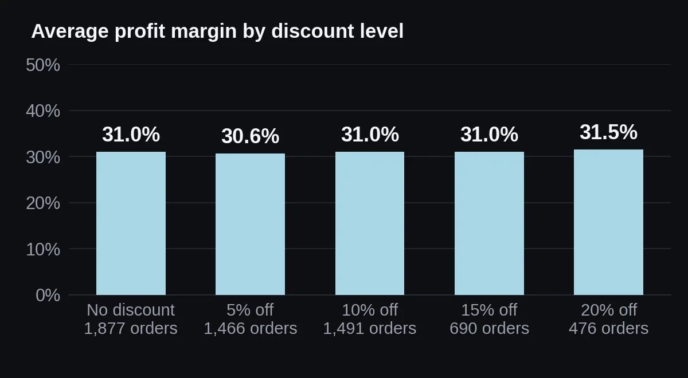
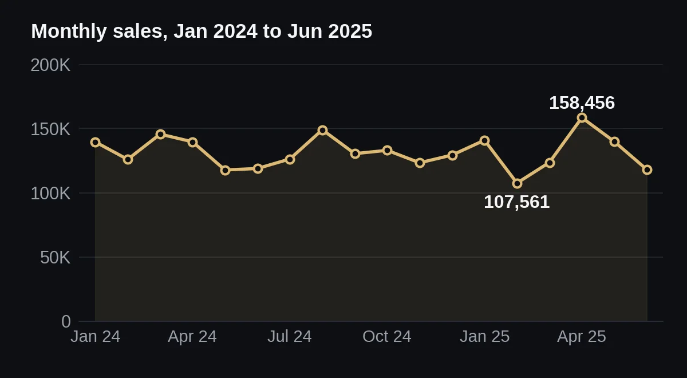

Retail Sales Performance Analysis
I checked where a retail business earns its money and whether its discounts pay for themselves.
Summary
Keep Electronics at the centre of the plan and review discounts before extending them. Confirm how Cost is defined first.
Problem
The dataset covers five product categories across four regions. Two questions decide where a retailer puts its effort: which categories and regions carry the profit, and whether discounting pays for itself.
The files contain no client brief, so these questions come from the notebook's own list of business insights: the strongest categories and regions, sales trends, and how discount levels relate to profit.
Data
- Source
- TODO for Moaz: say where this dataset comes from and how it was collected; the notebook does not say
- Size
- 6,120 rows and 10 columns. 6,000 unique orders remain after removing 120 duplicate rows.
- Period
- 1 Jan 2024 to 30 Jun 2025 (18 months).
- Columns
- Order_ID, Order_Date, Region, Category, Product, Quantity, Unit_Price, Discount, Sales, Cost
- Quality problems
- Before cleaning: 93 missing regions, 63 missing categories, 61 missing unit prices and 74 missing sales values. 21 orders have a quantity of zero or below, and 35 have sales of zero or below.
- Discounts
- Five levels: 0%, 5%, 10%, 15% and 20%.
- Currency
- TODO for Moaz: state the currency of Sales, Cost and Unit_Price; the files give none
Method
- Removed 120 duplicate rows, then trimmed and standardised the text in Region, Category and Product.
- Filled missing regions and categories with "Unknown" (90 and 60 orders).
- Replaced invalid or missing values with the column median: 20 quantities, 60 unit prices and 107 sales values.
- Added Profit (Sales minus Cost), Profit_Margin (profit as a percentage of sales), and month and quarter columns.
- Compared sales by category, profit by region, monthly sales, and margin by discount level.
- Tested whether discounted orders earn a different profit per order than full-price orders, using Welch's t-test, which does not assume equal variances.
- Added two checks the notebook does not contain: the same test on margin percentage, and a check of how median-filling affects the results.
What I found
Electronics carries the business
Electronics brings 57.2% of sales (1.35M) from 22.8% of orders. An average Electronics order is worth 990.09, against 218.75 for every other category. Its share of profit (56.3%) is close to its share of sales, so the advantage comes from order size, not margin.

Discounts lower profit per order, but not the margin
Most orders carry a discount: 4,123 of 6,000 (68.7%). Discounted orders earn 118.77 profit on average, against 132.22 for full-price orders. That is 13.45 less per order (95% confidence interval 5.14 to 21.76; Welch's t-test, p = 0.0015). The effect is small: the gap is about 10% of full-price profit, and Cohen's d is 0.09.
Margin tells a different story. Average margin stays near 31% at every discount level (30.6% to 31.5%). The gap between discounted and full-price orders is 0.07 points (p = 0.89), so I found no margin effect. Discounts also do not lift order size: average quantity stays between 2.87 and 3.09 items at every level.

| Discount | Orders | Avg quantity | Avg cost | Avg profit | Avg margin |
|---|---|---|---|---|---|
| No discount | 1,877 | 3.01 | 292.47 | 132.22 | 30.98% |
| 5% off | 1,466 | 3.01 | 285.07 | 125.60 | 30.59% |
| 10% off | 1,491 | 2.98 | 261.04 | 120.54 | 31.02% |
| 15% off | 690 | 3.09 | 239.61 | 110.38 | 30.98% |
| 20% off | 476 | 2.87 | 227.74 | 104.35 | 31.48% |
Average cost per order falls from 292.47 with no discount to 227.74 at 20% off, although average unit price stays between 138.75 and 145.01. A discount changes the selling price, not what the item cost, so this pattern suggests Cost may be calculated from the discounted sales value. The files cannot confirm that, and it would explain why margin never moves.
TODO for Moaz: explain how the Cost column was calculated
Regions are close, and sales are flat
Profit by region ranges from 169,698 (West) to 193,130 (North). I did not test whether that gap is real, so I would not act on it. Monthly sales range from 107,561 (Feb 2025) to 158,456 (Apr 2025). The first half of 2025 (788,613) is level with the first half of 2024 (787,534), a change of +0.1%. With 18 months of data I cannot separate seasonality from noise.

Filled sales values. The notebook replaced 107 sales values (1.8% of orders) with the median, 250.54. All 28 orders that show a negative profit come from these filled values. Without them, average margin is 31.65% instead of 30.94%, and Electronics margin is 31.74% instead of 27.74%. The margin shown on the projects page, 30.9%, is the notebook's figure as written.
A better fill exists. In the 5,815 orders where quantity, unit price and discount are all valid, Sales equals quantity × unit price × (1 − discount) every time. A formula would fill the gaps better than the median.
Small effect. The discount result is statistically significant but small, and the sample covers only 18 months.
| Question | Result | Test | p-value | Verdict |
|---|---|---|---|---|
| Profit per order, discounted vs full price | 118.77 vs 132.22 | Welch t-test Notebook | p = 0.0015 | Significant Small effect (d = 0.09) |
| Margin percentage, discounted vs full price | 30.91% vs 30.98% | Welch t-test Added | p = 0.89 | Not significant |
Recommendation
- Treat Electronics as the core line. It brings 57.2% of sales, so track its monthly sales and stock first.
- Do not extend discounts on this evidence. Discounted orders earn about 10% less profit per order and do not bring bigger baskets. Test a smaller discount on a few products before changing anything.
- Confirm how Cost is defined before drawing any conclusion about discount margins.
What I would do next
- Recompute Sales from quantity, unit price and discount instead of using the median, then rerun every figure.
- Split the discount test by category to see whether Electronics behaves differently.
- Test the regional profit gap, for example with a one-way ANOVA on profit per order.
- Look at profit by product; the file lists 20 products.
- Repeat the analysis on more than 18 months of data to check for seasonality.